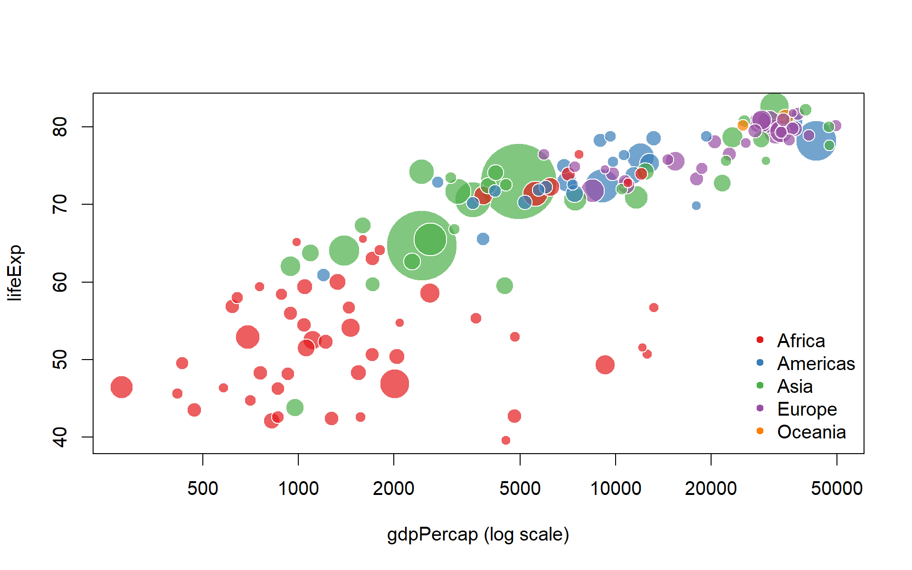
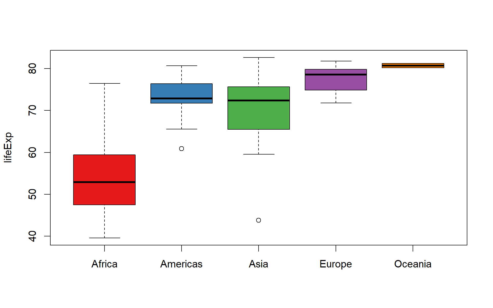
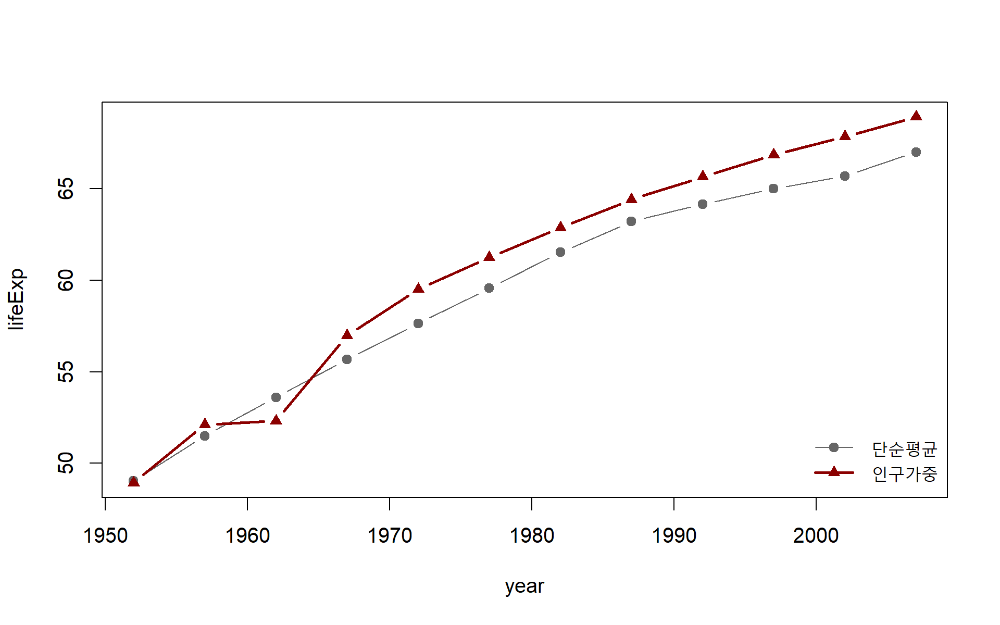
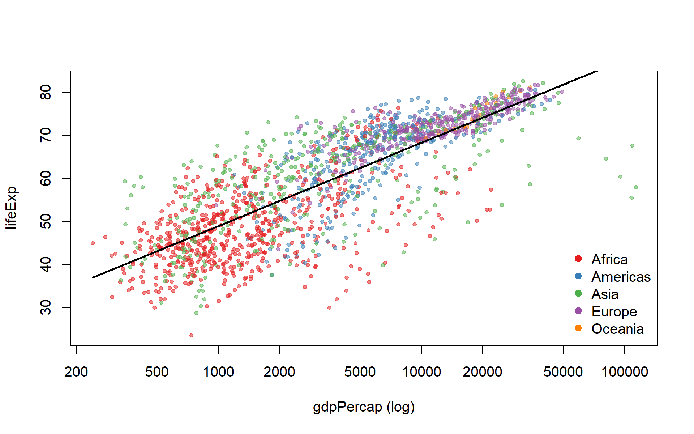
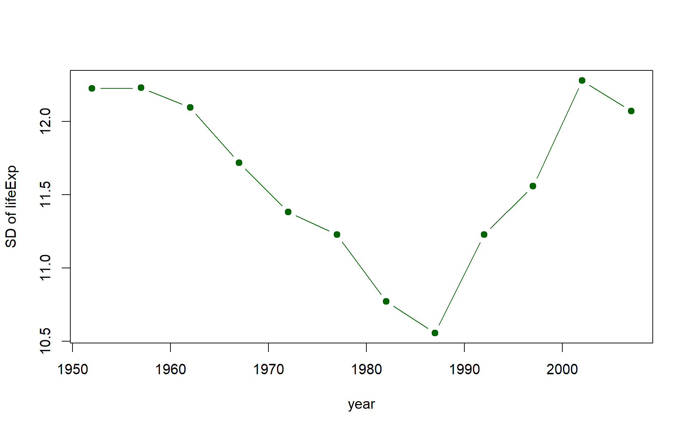
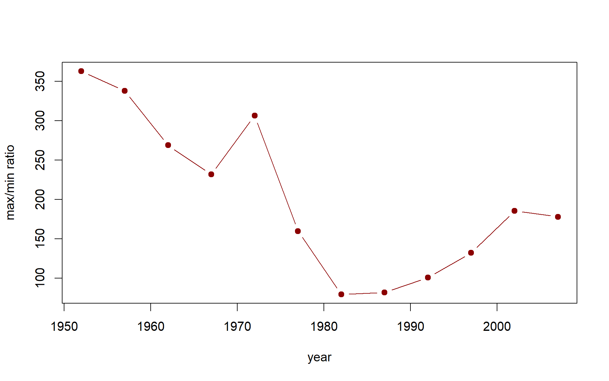

세계 기대수명 (2007, 인구가중)
68.9세
기대수명 향상 (1952→2007)
+20.0세
생명 격차 (최장수국−최단명국, 2007)
43.0세

| 대륙 | 국가수 | 기대수명 | GDP |
|---|---|---|---|
| Africa | 52 | 54.6 | 2,561 |
| Americas | 25 | 75.4 | 21,603 |
| Asia | 33 | 69.4 | 5,432 |
| Europe | 30 | 77.9 | 25,244 |
| Oceania | 2 | 81.1 | 32,885 |





| country | continent | CAGR |
|---|---|---|
| Equatorial Guinea | Africa | 6.53% |
| Taiwan | Asia | 5.93% |
| Korea, Rep. | Asia | 5.84% |
| Singapore | Asia | 5.63% |
| Botswana | Africa | 5.02% |
| Hong Kong, China | Asia | 4.77% |
| China | Asia | 4.68% |
| Oman | Asia | 4.65% |
| Thailand | Asia | 4.25% |
| Japan | Asia | 4.24% |
| country | continent | CAGR |
|---|---|---|
| Congo, Dem. Rep. | Africa | -1.86% |
| Kuwait | Asia | -1.50% |
| Haiti | Americas | -0.77% |
| Central African Republic | Africa | -0.76% |
| Liberia | Africa | -0.60% |
| Madagascar | Africa | -0.59% |
| Djibouti | Africa | -0.45% |
| Niger | Africa | -0.37% |
| Somalia | Africa | -0.37% |
| Nicaragua | Americas | -0.23% |
| country | continent | lifeExp_1952 | lifeExp_2007 | lifeExp_증감 |
|---|---|---|---|---|
| Zimbabwe | Africa | 48.451 | 43.487 | -4.96 |
| Swaziland | Africa | 41.407 | 39.613 | -1.79 |
| country | continent | lifeExp |
|---|---|---|
| Japan | Asia | 82.603 |
| Hong Kong, China | Asia | 82.208 |
| Iceland | Europe | 81.757 |
| Switzerland | Europe | 81.701 |
| Australia | Oceania | 81.235 |
| Spain | Europe | 80.941 |
| Sweden | Europe | 80.884 |
| Israel | Asia | 80.745 |
| France | Europe | 80.657 |
| Canada | Americas | 80.653 |
| country | continent | lifeExp |
|---|---|---|
| Swaziland | Africa | 39.613 |
| Mozambique | Africa | 42.082 |
| Zambia | Africa | 42.384 |
| Sierra Leone | Africa | 42.568 |
| Lesotho | Africa | 42.592 |
| Angola | Africa | 42.731 |
| Zimbabwe | Africa | 43.487 |
| Afghanistan | Asia | 43.828 |
| Central African Republic | Africa | 44.741 |
| Liberia | Africa | 45.678 |
| country | continent | gdpPercap |
|---|---|---|
| Norway | Europe | 49,357.19 |
| Kuwait | Asia | 47,306.99 |
| Singapore | Asia | 47,143.18 |
| United States | Americas | 42,951.65 |
| Ireland | Europe | 40,676.00 |
| Hong Kong, China | Asia | 39,724.98 |
| Switzerland | Europe | 37,506.42 |
| Netherlands | Europe | 36,797.93 |
| Canada | Americas | 36,319.24 |
| Iceland | Europe | 36,180.79 |